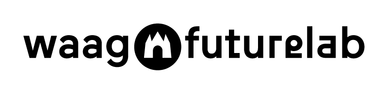

Nerd 10: Waag
Waag onderzoek
Samenvatting
Deze week kwam de Waag langs voor een onderzoek over het creëren van de ideale mobiele telefoon. Tijdens dit onderzoek kregen we eerst een introductie over wat de Waag doet, waarbij hun focus vooral ligt op onderzoek. Daarna werden een paar onderzoeksmethodes op ons toegepast. We deden een spel waarbij we in vakken moesten staan die bij ons pasten op basis van bijvoorbeeld ons favoriete besturingssysteem of zoekmachine. Vervolgens moesten we met behulp van kaarten onze ideale mobiele telefoon samenstellen en uitleggen wat elk kaartje betekende.
Reflectie
Tijdens deze Weekly Nerd sessie voelde ik me een beetje als een proefkonijn. Het was een langdradige sessie en ik heb het gevoel dat ik er weinig van heb geleerd. Hoewel het een unieke ervaring was, miste ik concrete informatie en praktische kennis die ik kon toepassen in mijn studie of toekomstige carrière. Daarom geef ik deze Weekly Nerd sessie een 1/10.
Conclusie
De sessie met de Waag was anders dan de gebruikelijke Weekly Nerd sessies, maar helaas vond ik het niet erg leerzaam of nuttig. Het interactieve aspect en de focus op onderzoeksmethodes waren interessant, maar voor mijn gevoel leverde het weinig waardevolle inzichten op.